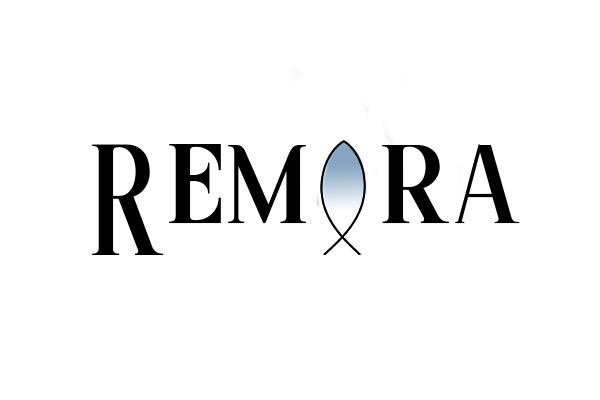
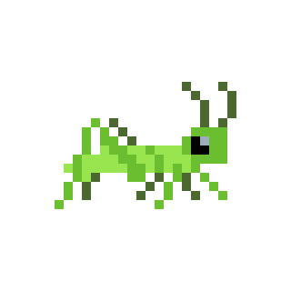
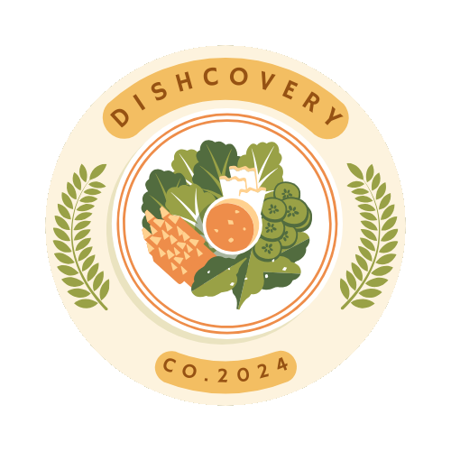

River Rd, Athens, Georgia 30609 • 706.461.8938 • Myonni.Bailey@uga.edu
I am a hardworking, determined student with strong skills related to Software Engineering, UX/UI Design, IT or a Product Manager. I strive to better myself professionally everyday and work well in group settings.
University of Georgia, Expected Graduation Date: May 2025, Major: Computer Science, Minor: Studio Art, GPA: 3.44, Courses: Intro to Computer Science, Intermediate Software Development, Discrete Math, Intro to Graphic Design, Calculus I, Calculus II, Intermediate Computer Science, Data Structures, Intro to Theory of Computing, Statistics, Algorithms, Systems Programming, Software Engineering, Introduction to Scientific Computation, Computer Networks, Computer Architecture, Statistical Methods, Mobile Software Development, Web Programming, Human-Computer Interaction and Computing Ethics.


